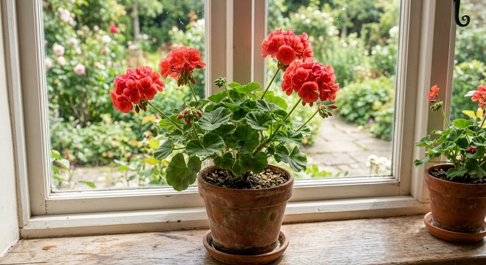

Виды растений · 5 мин чтения
Подкормка пеларгонии и герани: удобрение для роста и цветения
Домашняя герань, то есть пеларгония, любит много света и быстро расходует воду в горшке. Но цветение нельзя включить увеличенной дозой: сначала нужны солнце, компактная форма и здоровые корни.
Материал обновлён 24.10.2026 · Справочная информация, не заменяет инструкцию на упаковке.

Свет и форма куста важнее усиленной подкормки
При недостатке света пеларгония вытягивает междоузлия, листья располагаются реже, а цветочных зонтиков становится меньше. Подкормка в тёмном месте может дать мягкий прирост, но не сделает куст компактным. Поставьте растение на самое светлое подходящее окно или балкон с постепенным привыканием к солнцу. Поворачивайте горшок постепенно, чтобы крона развивалась равномернее.
Прищипка и санитарная обрезка зависят от типа пеларгонии и сезона. Удаляйте отцветшие соцветия и повреждённые листья чистым инструментом, не оставляя гниющей массы в центре куста. Если растение сильно вытянулось за зиму, сначала улучшают свет и при необходимости формируют побеги; удобрение не укорачивает уже выросшие междоузлия.
Полив в горшке и на балконе без застоя воды
На солнце небольшой горшок просыхает быстро, но пеларгония не должна постоянно стоять в поддоне с водой. Поливайте после просыхания верхнего слоя с учётом размера куста и погоды, а лишнее сливайте. В холодную дождливую неделю на балконе потребность в воде заметно ниже, чем в жаркий день. Один и тот же календарь для окна и открытого балкона не работает.
Не вносите раствор в полностью пересушенный ком, если инструкция требует предварительного увлажнения. Сначала восстановите нормальный полив. При мокром тяжёлом субстрате и поникающих листьях проверьте сток и корни. Ошибки воды часто принимают за нехватку питания, хотя корни в заболоченной смеси не могут нормально работать.
- куст получает несколько часов яркого света;
- отцветшие зонтики и сухие листья удалены;
- субстрат просыхает, но растение не доводится до увядания;
- в поддоне нет постоянной воды;
- дата подкормки не совпадает случайно с другим удобрением.
Как подкармливать пеларгонию в сезон роста
Используйте средство для цветущих или комнатных растений строго по этикетке. Контейнерная пеларгония при частых поливах быстрее расходует запас субстрата, чем растение в грунте, поэтому плановая схема важна, но повышать концентрацию нельзя. Приготовьте раствор на измеренный объём воды; расчёт можно сверить со статьёй как развести жидкое удобрение. Если в субстрат уже внесено долгодействующее питание, жидкую схему не накладывают без учёта этой заправки.
Семяздрав заявлен продавцом для комнатных растений и цветов. Для пеларгонии ориентируйтесь на актуальную этикетку и состояние куста: активно растущее растение на солнце и зимующая в тёмной комнате пеларгония не должны получать одинаковый график. Общие принципы частоты разобраны в материале о частоте подкормок.
Почему герань наращивает листья, но не цветёт
Проверьте сначала свет и возраст побегов. Слишком большой горшок сам по себе не является единственной причиной, но большой объём мокрого субстрата и слабое освещение ухудшают режим корней. Избыток азотной составляющей в суммарной схеме может поддерживать зелень, однако менять формулу наугад поверх уже внесённого удобрения нельзя. Важно знать все источники питания: грунт, гранулы и жидкие растворы.
Также оцените ночную температуру, загущение и вредителей. Белокрылка и клещ ослабляют растение, а подкормка их не уничтожает. Если нижние листья желтеют массово, используйте диагностику почему желтеют листья, а не добавляйте дозу по одному симптому. Цветение оценивают по новым зонтикам после стабилизации света и полива.
Зимовка и возврат к активному уходу весной
Зимой при коротком дне пеларгония растёт медленнее и легче вытягивается. Сокращайте питание вместе с активностью растения и не держите субстрат постоянно мокрым в прохладном месте. Весной постепенно увеличивайте свет и полив. Пересадку и сильную обрезку не обязательно совмещать с первой подкормкой в один день: дайте корням и побегам показать восстановление.
Если растение пересаживают в заправленный субстрат, срок первого жидкого внесения определяют две инструкции — грунта и удобрения. Порядок подробно описан в статье о подкормке после пересадки. Журнал по месяцам поможет отличить естественную зимнюю паузу от ошибки дозировки и не повторять её в следующем сезоне.
Частые вопросы
Как часто подкармливать пеларгонию в горшке?
По инструкции выбранного удобрения в период активного роста. Частый полив на солнце не означает, что раствор нужно давать при каждом увлажнении, если этикетка этого не предусматривает.
Почему у герани много листьев и мало цветов?
Чаще проверяют свет, форму куста, суммарное питание и вредителей. Увеличение дозы без диагностики может усилить зелень и накопление солей.
Можно ли подкармливать пеларгонию зимой?
Только при активном росте под достаточным светом и по этикетке. В тёмной зимовке график обычно сокращают вместе с поливом.
Нужно ли удалять отцветшие зонтики?
Да, аккуратное удаление отцветших соцветий делает куст чище и помогает растению не тратить ресурсы на созревание ненужных семян.